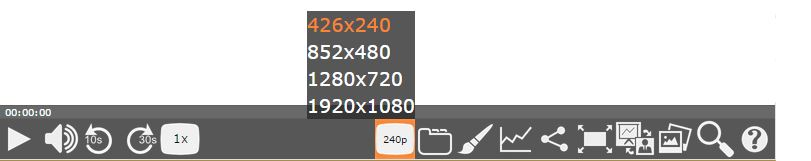

Paella Player

Paella está diseñado para mostrar dos ventanas de vídeo, la cámara y la vista de la presentación , y un poco de información sobre la conferencia. Puede navegar por las diapositivas y las pestañas , pero también se puede empezar a ver la conferencia pulsando el botón de reproducción en la parte superior de la ventana de vídeo o en la barra de controles.
Reproducir y Pausar

Botón de reproducción y pausa del player. Si hace clic fuera de los controles de la barra también se detiene / reproduce el player.
Volumen

Controla el volumen de reproducción a través de la ventana emergente.
Retroceder y Avanzar
Botón para avanzar/retroceder cierto tiempo en el video..
Velocidad de Reproducción

Con este plugin los usuarios pueden establecer la velocidad de reproduccion del player.
Resolución

Los usuarios pueden seleccionar las diferentes resoluciones para ajustar la calidad de reproduccion deseada.
Tabs

Estos plugins son adaptados a paella de la version de paella extended, permiten entre otras cosas, a los usuarios poder comentar los videos y ver una breve descripcion de los mismos.
Estilo

Los usuarios pueden cambiar la combinacion de colores y iconos del reproductor a su gusto.
Compartir

El video se puede compartir en Facebook, Twitter o incluso si le ha gustado el video, puede conseguir el codigo embedido para mostrarlo en su página web.
Pantalla Completa
Los usuarios pueden utilizar este botón para entrar/salir del modo pantalla completa.
Modo de Visualización

Se puede cambiar el modo / distribucion de las fuentes de video mostradas en el reproductor.
Modo Pizarra

Cuando el video, posea, imágenes de alta resolución, los usuarios podran entrar en el modo de visualizacion de la pizarra, seleccionando la opcion en el plugin de visualización.
Subtítulos

Activa los subtitulos con este plugin, y selecciona entre los idiomas deseados. Si se selecciona la opcion "ninguno" se desactivaran los subtitulos para el video reproducido.
Estadísticas

En este plugin se muestran las zonas del video mas reproducidas por todos los usuarios.
Diapositivas

Usando este plugin al usuario se le muestra un popup donde se muestran las diapositivas del video a lo largo de la linea de tiempo, permitiendo al usuario al hacer click sobre ellas, saltar al instante preciso donde se muestran.
Búsqueda

Con este plugin los usuarios son capaces de buscar terminos de entre todas las fuentes configuradas ( OCR de diapositicas y subtitulos, por ejemplo ) y devolver a usuario una lista con todos los resultados ordenados por tiempo.
Editor

Este boton permite al usuario entrar en el modo de edicion de video.